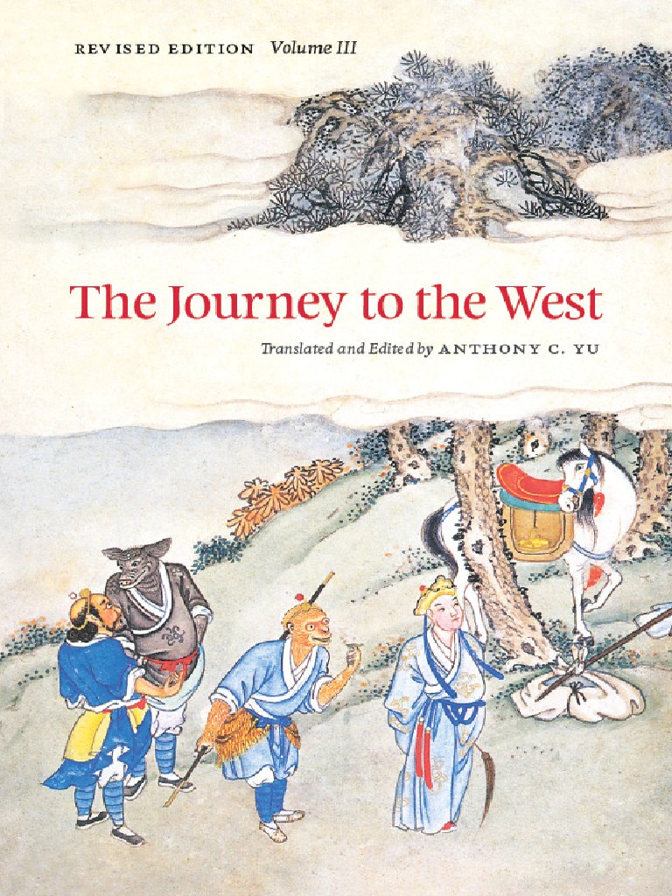

Journey to the West
Journey to the West was written by Wu Cheng’en in 1592 AD, the Ming Dynasty. It is actually based on the true story of a Buddhist monk named Xuanzang travelling to retrieve scriptures from India in the year 629 AD. Xuanzang (or Tripitaka, meaning “three baskets”) is the hero who although starts out a helpless, frightful traveler, grows to become a strong leader always pushing his troupe in the right direction. Though Xuanzang is the main character in the story, it is Monkey who steals the show with his antics, trickery, and incredible power. Monkey similarly starts out flawed, needing constant attention to keep him from doing the wrong thing. Xuanzang even gets a special headband that hurts Monkey whenever he does something bad. Eventually, Monkey does grow and learn to control himself after becoming enlightened. Kuan Yin is integral to Monkey’s growth as she is a powerful great goddess who always has an answer to any problem Monkey faces. She is a bodhisattva – someone who has achieved enlightenment but chooses to not reach Buddhahood in order to help others become enlightened.